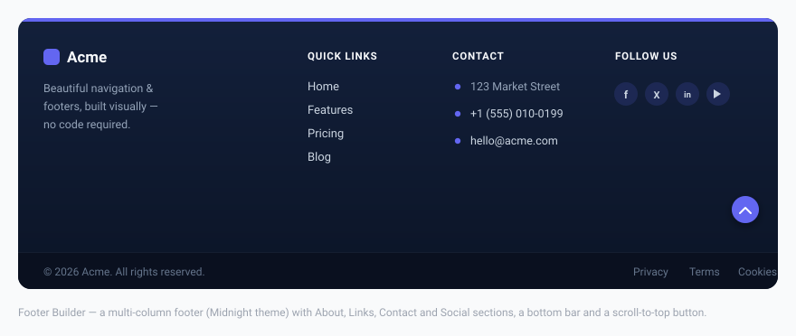

Footer Builder
Build a professional, multi-column site footer entirely inside the WordPress admin — choose up to six sections per row, style every detail visually, and place it with a block, a shortcode, or automatically on every page.

Enabling & placement
Open Menu Builder → Footer. The toolbar at the top of the page controls the footer’s global behaviour:
| Control | Description |
|---|---|
| Enable footer | Master on/off switch. The footer only renders when this is on and at least one section has been added. |
| Layout | First column wide (the first section is wider — ideal for an About block), Equal columns, or Centered. |
| Placement | Manual — you place it yourself with the block or shortcode. Automatic — the footer is injected at the bottom of every page for you. |
| Priority | Shown only when Placement is Automatic. The wp_footer hook priority (1–9999, default 100) — lower numbers print earlier. Raise it if the footer collides with another plugin. |
Automatic placement is smart about duplicates: if a footer was already output manually (via block or shortcode) earlier on the same page, the auto-injector skips itself so you never get two footers.
Setup Wizard
The fastest way to a complete footer is the 🪄 Setup Wizard button in the toolbar. It walks you through four steps — layout → theme → content → bottom bar — and populates a full, styled footer in under a minute. The wizard opens automatically the first time you visit the Footer page.
Footer sections
The footer is built from sections (the columns). Click ＋ Add section to add one — up to 6 per row. Every section card has a Title, a Hide on mobile checkbox, and a ⧉ Duplicate button that clones the whole section (including its content) and inserts it below.
There are 7 section types:
| Type | What it renders | Key fields |
|---|---|---|
| About / text | An optional logo image followed by a paragraph of text — typically a short company description. | Logo image, image width, text |
| Link list | A vertical list of links (up to 20), each able to open in a new tab. | Label, URL, open in new tab |
| Contact info | Address, phone and email. The phone becomes a tel: link and the email a mailto: link automatically. | Address, phone, email |
| Social icons | A row of branded social icons (up to 14) linking to your profiles. | Network + URL per icon |
| Opening hours | A simple list of lines (up to 10), e.g. “Mon–Fri: 9–18”. | One line per row |
| Newsletter | An email signup form that posts to any external service (Mailchimp, ConvertKit, Brevo, …). | Form action URL, subtitle, placeholder, button text, GDPR text |
| Custom HTML | Any HTML you like, sanitised with WordPress’s wp_kses_post — useful for embeds, badges or shortcodes. | HTML |
The Social icons section supports 14 networks: Facebook, Instagram, X (Twitter), LinkedIn, YouTube, TikTok, Pinterest, GitHub, WhatsApp, Telegram, Discord, Spotify, Threads and Email. Icons come from Font Awesome 6 brand glyphs.
The Newsletter section renders nothing until you fill in a form action URL — this prevents an empty form from accidentally posting back to the current page. Add an optional GDPR consent checkbox to keep signups compliant.
Bottom bar
Below the sections sits an optional bottom bar, configured in the same page:
- Copyright text — free text; the token
{year}is replaced with the current year automatically. - Legal links — up to 6 small links (Privacy, Terms, Cookies, …).
- Social in bottom bar — mirror your social icons into the bottom bar.
- Scroll-to-top button — a floating, accent-coloured arrow that appears after the visitor scrolls 300 px and smooth-scrolls back to the top.
Footer themes
The 🎨 Footer Themes grid applies a curated palette in one click. There are 11 themes:
Midnight, Carbon Gold, Graphite, Deep Ocean, Evergreen, Bordeaux, Sapphire, Aurora, Porcelain, Sandstone and Editorial.
Each is hand-tuned for contrast and harmony — the dark palettes include subtle depth gradients. Applying a theme is non-destructive: every individual colour remains editable afterwards in the Style panel.
Styling
The 🎛 Style panel (with a live preview beside it) gives you full visual control. A 👁 Live Preview updates in real time as you change sections, colours and typography — matching the public front end.
Colours
Background, headings, text, links, link hover, accent, plus the bottom bar background and text. An optional CSS background gradient can override the solid background.
Layout
| Option | Range |
|---|---|
| Accent bar (thin coloured line on top) | On/off + height 1–10 px |
| Vertical padding | 16–160 px |
| Horizontal padding | 0–120 px |
| Column gap | 8–120 px |
| Content max width | 600–1920 px |
| Link spacing | 2–40 px |
| Mobile alignment | Left or Center |
| Bottom bar divider | Show/hide the top border |
Typography
- Heading — size (10–28 px), weight (Regular–Extra-bold), and style (UPPERCASE or Normal).
- Text size — 11–20 px.
- Link hover effect — Slide right, Animated underline, or Color only.
Social icons
Choose an icon style — Circle badge, Rounded square, or Plain icons — and a size from 12–28 px.
Custom CSS
A scoped CSS box for fine overrides. Use .menux-footer as the parent selector to keep your rules contained to the footer.
Placing the footer
There are three ways to get the footer onto your site — pick whichever suits your theme:
- Automatic — set Placement to Automatic in the toolbar and the footer appears at the bottom of every page. No block or shortcode required.
- Gutenberg block — add the MenuX — Footer block to a footer template part in the Site Editor (FSE themes).
- Shortcode — paste
[menux_footer]into any page, widget area, or page builder (Elementor, Divi, classic themes).
All footer text — headings, links, copyright and more — is translatable. The builder registers every string with the WPML / Polylang String Translation API, and TranslatePress translates the rendered output directly. See the Multilingual page.